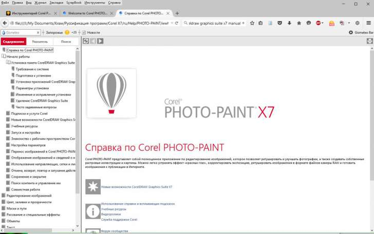

Инструментарий Corel PHOTO-PAINT и сравнение с Adobe Photoshop
Тема создана не ради холивара, но для того, чтобы изучить программу Corel PHOTO-PAINT (далее CPP).
В данном контексте будет также полезно сравнивать инструментарий программы в сравнении с Adobe Photoshop (далее PS), т.к. по данному фоторедактору существует много полезных уроков, которые хотелось бы применить к CPP. Иногда приходится искать тот или иной инструмент и чтобы его найти быстро и точно, то будем выкладывать информацию инструментарию.
Вот собственно первое сравнение.
PS - Levels (Уровни):
Внешняя ссылка
CPP - Histogram equalization (Выравнивание гистограммы):
Фильтр Histogram equalization (Выравнивание гистограммы)
Также в CPP есть инструмент - Contrast Enhancement (Увеличение контрастности), как я понял - это продвинутые уровни, поправьте, если не прав:
Фильтры Contrast Enhancement (Увеличение контрастности) и Local Equalization (Местное выравнивание)
Единственное но, Histogram equalization находится только в свитке Image - Ajust (Изображение - Регулировать), а Contrast Enhancement еще и в Lens (Линза), т.е. последний инструмент вносит не деструктивные изменения, т.е. сохраняет исходное изображение.
А это что?

А все это есть здесь
Baryga88, спасибо!
Есть один вопрос, теперь дилемма, здесь задать или создать новую тему по конкретному вопросу?
Mackentio, вообще здесь рекомендуется, один вопрос - одна тема. Нельзя сваливать несколько вопросов в одной теме. Иначе, того гляди Sancho забанит в секунду :) :)
Baryga88, все, я понял, спасибо :))
Страницы